Chapter 7 Analysis by Spatial Extent
Bar charts and tables to examine how contributions to conferences vary by methods
#spec(cpdata)
spatdata <- cpdata %>%
select_if(is.numeric) %>%
gather(key = Spatial, value = count, Micro:`Undefined Extent`) %>%
filter(count > 0) %>%
group_by(`Spatial`) %>%
summarise_all(sum, na.rm=T)
factor_order <- c('Micro', 'Mini', 'Local', 'Regional', 'National', 'Continental', 'Global','Undefined Extent')
factor_labels <- c('Micro', 'Mini', 'Local', 'Regional', 'National', 'Continental', 'Global','Undefined')
spatdata <- spatdata %>%
mutate(Spatial = factor(Spatial, levels = factor_order)) %>%
arrange(Spatial)
uspatdata <- cpdata %>%
select_if(is.numeric) %>%
gather(key = Spatial, value = count, Micro:Global) %>%
filter(count > 0) %>%
group_by(`Spatial`) %>%
summarise_all(sum, na.rm=T)
ufactor_order <- c('Micro', 'Mini', 'Local', 'Regional', 'National', 'Continental', 'Global','Undefined Extent')
ufactor_labels <- c('Micro', 'Mini', 'Local', 'Regional', 'National', 'Continental', 'Global','Undefined')
uspatdata <- uspatdata %>%
mutate(Spatial = factor(Spatial, levels = ufactor_order)) %>%
arrange(Spatial)7.1 Total Conference Contributions
General observations:
- Dominated by Local extent studies, but also many at national and regional extents
- Global and Continental (largest extent) have fewest studies (8 and 27 respectively)
#ggplot(authCounts, aes(x=Spatial, y=count)) + geom_bar(stat="identity")
spatdata %>%
select(Spatial, count) %>%
mutate(prop = count/sum(count)) %>%
mutate(prop = round(prop,3)) %>%
kable() %>%
kable_styling() %>%
scroll_box(width = "100%")| Spatial | count | prop |
|---|---|---|
| Micro | 36 | 0.043 |
| Mini | 99 | 0.119 |
| Local | 231 | 0.279 |
| Regional | 168 | 0.203 |
| National | 146 | 0.176 |
| Continental | 27 | 0.033 |
| Global | 8 | 0.010 |
| Undefined Extent | 114 | 0.138 |
ggplot(spatdata, aes(x=Spatial, y=count)) +
geom_bar(stat="identity") +
geom_text(aes(x=Spatial, y=max(count), label = paste0(round(100*count / sum(count),1), "%"), vjust=-0.5))+ theme(axis.text.x = element_text(angle = 15, hjust = 1)) +
labs(y = "Abstract Count")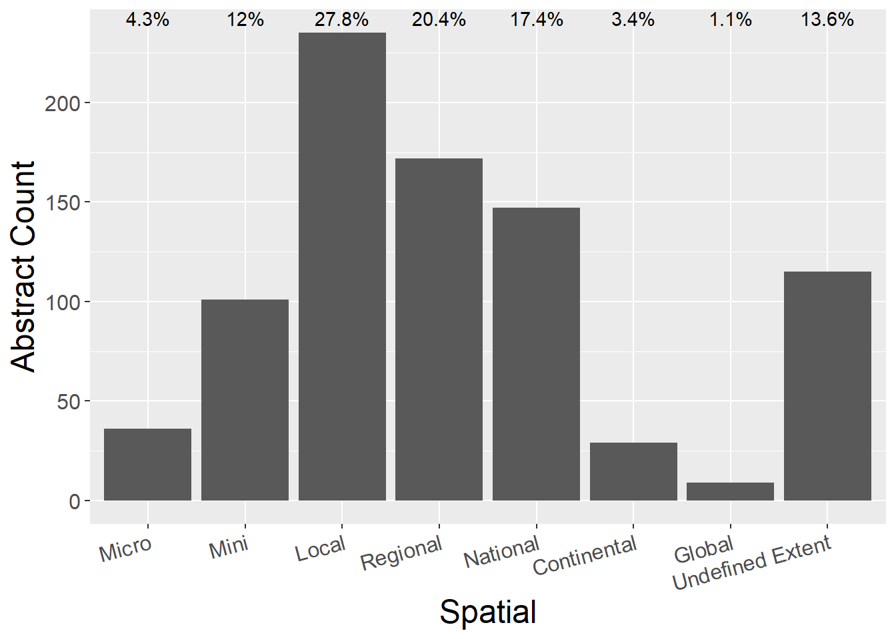
uspatdata %>%
select(Spatial, count) %>%
mutate(prop = count/sum(count)) %>%
mutate(prop = round(prop,3)) %>%
kable() %>%
kable_styling() %>%
scroll_box(width = "100%")| Spatial | count | prop |
|---|---|---|
| Micro | 36 | 0.050 |
| Mini | 99 | 0.138 |
| Local | 231 | 0.323 |
| Regional | 168 | 0.235 |
| National | 146 | 0.204 |
| Continental | 27 | 0.038 |
| Global | 8 | 0.011 |
ggplot(uspatdata, aes(x=Spatial, y=count)) +
geom_bar(stat="identity") +
geom_text(aes(x=Spatial, y=max(count), label = paste0(round(100*count / sum(count),1), "%"), vjust=-0.5))+ theme(axis.text.x = element_text(angle = 15, hjust = 1)) +
labs(y = "Abstract Count")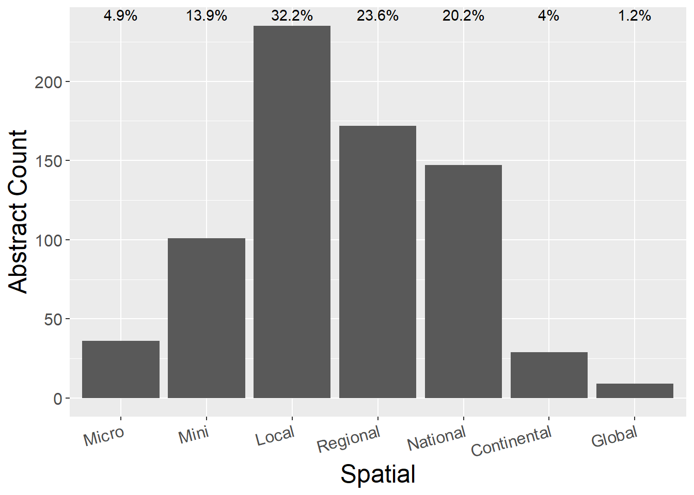
7.3 Landscape Type
7.3.1 Using all landscape types
General observations:
- Global extent studies do not consider Lowland rural landscapes
lspCounts <- spatdata %>%
select(Spatial,`Upland rural`, `Lowland rural`, Urban, Riverscape, Seascape, `Undefined LspType`,Other) %>%
mutate(sum = rowSums(.[2:8])) %>% #calculate total for subsquent calcultation of proportion
gather(key = Type, value = count, -Spatial, -sum) %>%
mutate(prop = count / sum) #calculate proportion
spatdata %>%
select(Spatial,`Upland rural`, `Lowland rural`, Urban, Riverscape, Seascape, `Undefined LspType`,Other) %>%
mutate(Total = rowSums(.[2:8])) %>% #calculate total
mutate_if(is.numeric, funs(prop = ./ Total)) %>%
mutate_at(vars(ends_with("prop")), round, 3) %>%
select(-Total_prop) %>%
kable() %>%
kable_styling() %>%
scroll_box(width = "100%")| Spatial | Upland rural | Lowland rural | Urban | Riverscape | Seascape | Undefined LspType | Other | Total | Upland rural_prop | Lowland rural_prop | Urban_prop | Riverscape_prop | Seascape_prop | Undefined LspType_prop | Other_prop |
|---|---|---|---|---|---|---|---|---|---|---|---|---|---|---|---|
| Micro | 4 | 20 | 5 | 4 | 1 | 3 | 1 | 38 | 0.105 | 0.526 | 0.132 | 0.105 | 0.026 | 0.079 | 0.026 |
| Mini | 12 | 62 | 13 | 15 | 5 | 4 | 1 | 112 | 0.107 | 0.554 | 0.116 | 0.134 | 0.045 | 0.036 | 0.009 |
| Local | 38 | 116 | 47 | 34 | 26 | 15 | 1 | 277 | 0.137 | 0.419 | 0.170 | 0.123 | 0.094 | 0.054 | 0.004 |
| Regional | 30 | 94 | 14 | 16 | 17 | 9 | 4 | 184 | 0.163 | 0.511 | 0.076 | 0.087 | 0.092 | 0.049 | 0.022 |
| National | 35 | 49 | 9 | 14 | 14 | 39 | 11 | 171 | 0.205 | 0.287 | 0.053 | 0.082 | 0.082 | 0.228 | 0.064 |
| Continental | 3 | 8 | 2 | 4 | 2 | 13 | 3 | 35 | 0.086 | 0.229 | 0.057 | 0.114 | 0.057 | 0.371 | 0.086 |
| Global | 0 | 0 | 2 | 1 | 3 | 3 | 0 | 9 | 0.000 | 0.000 | 0.222 | 0.111 | 0.333 | 0.333 | 0.000 |
| Undefined Extent | 4 | 24 | 5 | 18 | 8 | 57 | 4 | 120 | 0.033 | 0.200 | 0.042 | 0.150 | 0.067 | 0.475 | 0.033 |
ggplot(lspCounts, aes(x=Spatial, y=count, fill=Type)) + geom_bar(stat="identity", colour="white") +
scale_fill_viridis(discrete = TRUE) +
theme(axis.text.x = element_text(angle = 30, hjust = 1)) +
labs(fill="Landscape", y = "Abstract Count", x="Extent")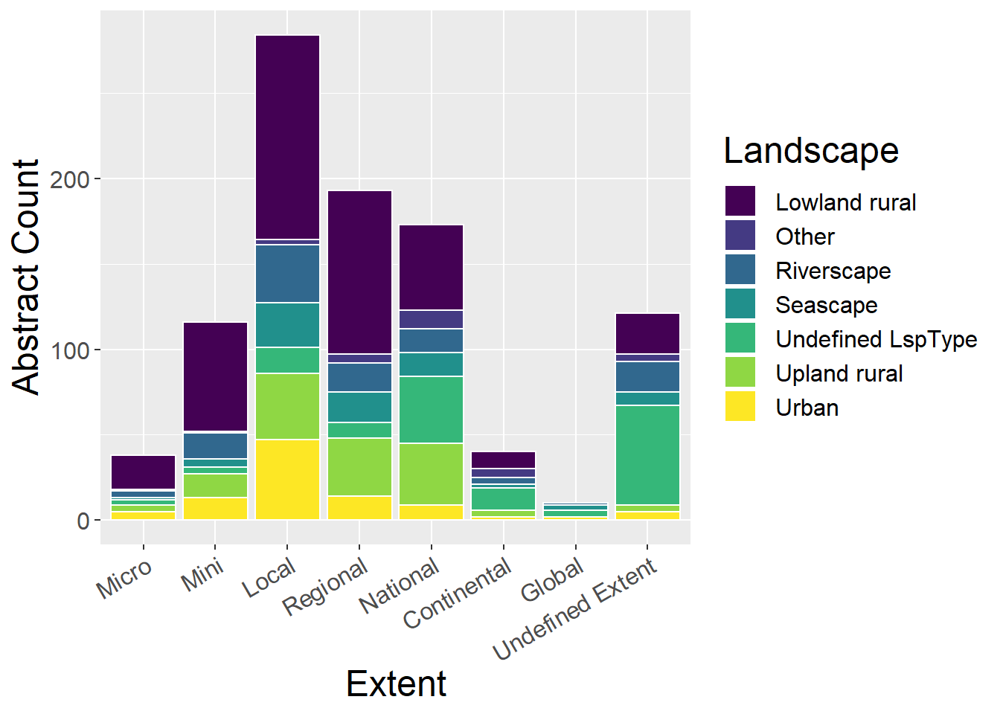
ggplot(lspCounts, aes(x=Spatial, y=prop, fill=Type)) + geom_bar(stat="identity", colour="white") +
scale_fill_viridis(discrete = TRUE) +
theme(axis.text.x = element_text(angle = 30, hjust = 1)) +
labs(fill="Landscape", y = "Proportion", x="Extent")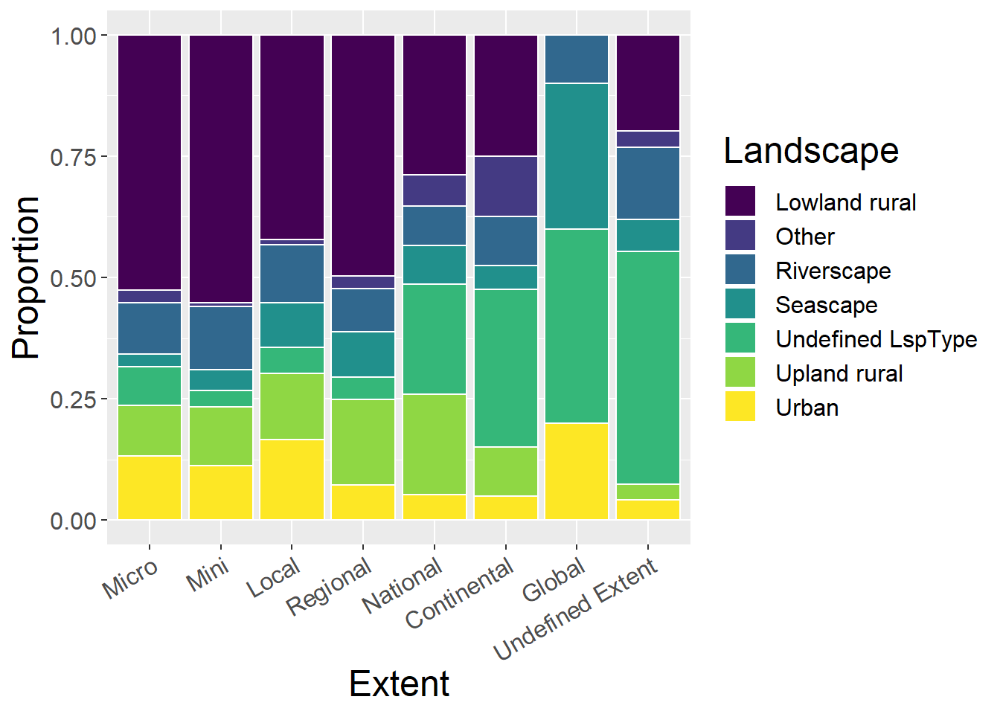
7.3.2 Without ‘Undefined LspType’ and ‘Other’ landscape types
General observations:
- National extent studies have largest proportion of Upland Rural landscape studies
- Micro, Mini and Regional extent studies dominated by Lowland rural
- ‘Undefined extent’ has largest proportion of riverscape studies
lspCounts <- spatdata %>%
select(Spatial,`Upland rural`, `Lowland rural`, Urban, Riverscape, Seascape) %>%
mutate(sum = rowSums(.[2:6])) %>% #calculate total for subsquent calcultation of proportion
gather(key = Type, value = count, -Spatial, -sum) %>%
mutate(prop = count / sum) #calculate proportion
spatdata %>%
select(Spatial,`Upland rural`, `Lowland rural`, Urban, Riverscape, Seascape) %>%
mutate(Total = rowSums(.[2:6])) %>% #calculate total
mutate_if(is.numeric, funs(prop = ./ Total)) %>%
mutate_at(vars(ends_with("prop")), round, 3) %>%
select(-Total_prop) %>%
kable() %>%
kable_styling() %>%
scroll_box(width = "100%")| Spatial | Upland rural | Lowland rural | Urban | Riverscape | Seascape | Total | Upland rural_prop | Lowland rural_prop | Urban_prop | Riverscape_prop | Seascape_prop |
|---|---|---|---|---|---|---|---|---|---|---|---|
| Micro | 4 | 20 | 5 | 4 | 1 | 34 | 0.118 | 0.588 | 0.147 | 0.118 | 0.029 |
| Mini | 12 | 62 | 13 | 15 | 5 | 107 | 0.112 | 0.579 | 0.121 | 0.140 | 0.047 |
| Local | 38 | 116 | 47 | 34 | 26 | 261 | 0.146 | 0.444 | 0.180 | 0.130 | 0.100 |
| Regional | 30 | 94 | 14 | 16 | 17 | 171 | 0.175 | 0.550 | 0.082 | 0.094 | 0.099 |
| National | 35 | 49 | 9 | 14 | 14 | 121 | 0.289 | 0.405 | 0.074 | 0.116 | 0.116 |
| Continental | 3 | 8 | 2 | 4 | 2 | 19 | 0.158 | 0.421 | 0.105 | 0.211 | 0.105 |
| Global | 0 | 0 | 2 | 1 | 3 | 6 | 0.000 | 0.000 | 0.333 | 0.167 | 0.500 |
| Undefined Extent | 4 | 24 | 5 | 18 | 8 | 59 | 0.068 | 0.407 | 0.085 | 0.305 | 0.136 |
ggplot(lspCounts, aes(x=Spatial, y=count, fill=Type)) + geom_bar(stat="identity", colour="white") +
scale_fill_viridis(discrete = TRUE) +
theme(axis.text.x = element_text(angle = 30, hjust = 1)) +
labs(fill="Landscape", y = "Abstract Count", x="Extent")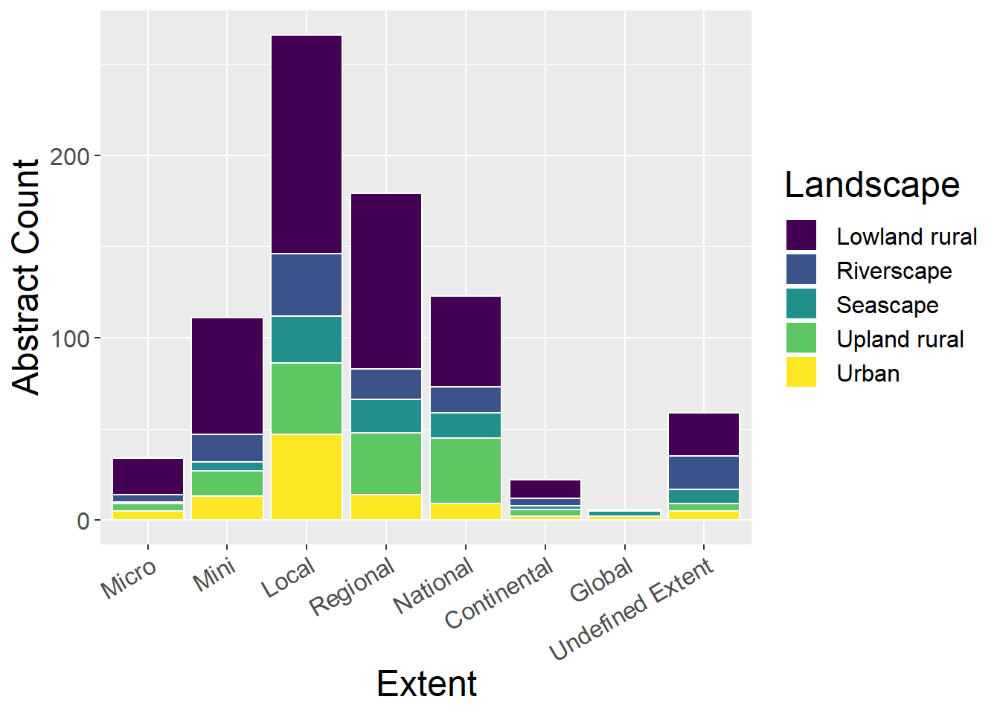
ggplot(lspCounts, aes(x=Spatial, y=prop, fill=Type)) + geom_bar(stat="identity", colour="white") +
scale_fill_viridis(discrete = TRUE) +
theme(axis.text.x = element_text(angle = 30, hjust = 1)) +
labs(fill="Landscape", y = "Proportion", x="Extent")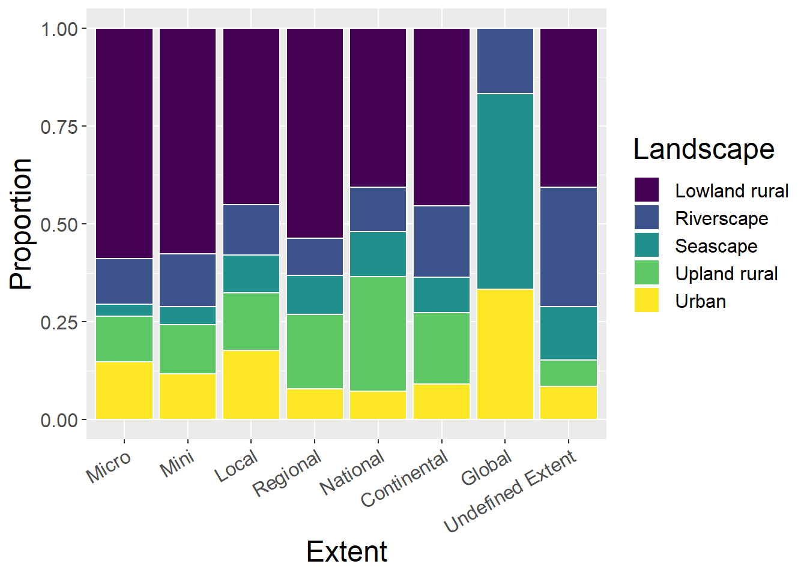
7.4 Organism
General observations:
- Global studies are again qualitatively different from other scale studies - no amphibiams, birds, reptiles, woodland studies but largest proportions of Fish and generic Habitat studies
- Smallest extents (mini and micro) have largest proportions of Plant and Inverts studies
speciesCounts <- spatdata %>%
select(Spatial, Mammals, Humans, Birds, Reptiles, Inverts, Plants, Amphibians, Fish, `Generic Habitat`,`Woodland Forests`) %>%
mutate(sum = rowSums(.[2:11])) %>% #calculate total for subsquent calcultation of proportion
gather(key = Type, value = count, -Spatial, -sum) %>%
mutate(prop = count / sum) #calculate proportion
spatdata %>%
select(Spatial, Mammals, Humans, Birds, Reptiles, Inverts, Plants, Amphibians, Fish, `Generic Habitat`,`Woodland Forests`) %>%
mutate(Total = rowSums(.[2:11])) %>% #calculate total for subsquent calcultation of proportion
mutate_if(is.numeric, funs(prop = ./ Total)) %>%
mutate_at(vars(ends_with("prop")), round, 3) %>%
select(-Total_prop) %>%
kable() %>%
kable_styling() %>%
scroll_box(width = "100%")| Spatial | Mammals | Humans | Birds | Reptiles | Inverts | Plants | Amphibians | Fish | Generic Habitat | Woodland Forests | Total | Mammals_prop | Humans_prop | Birds_prop | Reptiles_prop | Inverts_prop | Plants_prop | Amphibians_prop | Fish_prop | Generic Habitat_prop | Woodland Forests_prop |
|---|---|---|---|---|---|---|---|---|---|---|---|---|---|---|---|---|---|---|---|---|---|
| Micro | 1 | 0 | 6 | 0 | 18 | 17 | 3 | 0 | 3 | 3 | 51 | 0.020 | 0.000 | 0.118 | 0.000 | 0.353 | 0.333 | 0.059 | 0.000 | 0.059 | 0.059 |
| Mini | 6 | 5 | 23 | 0 | 39 | 24 | 1 | 3 | 16 | 15 | 132 | 0.045 | 0.038 | 0.174 | 0.000 | 0.295 | 0.182 | 0.008 | 0.023 | 0.121 | 0.114 |
| Local | 15 | 30 | 43 | 2 | 25 | 29 | 5 | 3 | 71 | 52 | 275 | 0.055 | 0.109 | 0.156 | 0.007 | 0.091 | 0.105 | 0.018 | 0.011 | 0.258 | 0.189 |
| Regional | 6 | 17 | 25 | 1 | 12 | 20 | 1 | 3 | 49 | 39 | 173 | 0.035 | 0.098 | 0.145 | 0.006 | 0.069 | 0.116 | 0.006 | 0.017 | 0.283 | 0.225 |
| National | 8 | 19 | 16 | 2 | 10 | 20 | 0 | 0 | 48 | 34 | 157 | 0.051 | 0.121 | 0.102 | 0.013 | 0.064 | 0.127 | 0.000 | 0.000 | 0.306 | 0.217 |
| Continental | 1 | 6 | 4 | 0 | 1 | 4 | 0 | 0 | 10 | 4 | 30 | 0.033 | 0.200 | 0.133 | 0.000 | 0.033 | 0.133 | 0.000 | 0.000 | 0.333 | 0.133 |
| Global | 0 | 1 | 0 | 0 | 0 | 1 | 0 | 2 | 3 | 0 | 7 | 0.000 | 0.143 | 0.000 | 0.000 | 0.000 | 0.143 | 0.000 | 0.286 | 0.429 | 0.000 |
| Undefined Extent | 6 | 10 | 15 | 1 | 10 | 10 | 1 | 1 | 34 | 17 | 105 | 0.057 | 0.095 | 0.143 | 0.010 | 0.095 | 0.095 | 0.010 | 0.010 | 0.324 | 0.162 |
ggplot(speciesCounts, aes(x=Spatial, y=count, fill=Type)) + geom_bar(stat="identity", colour="white") +
scale_fill_viridis(discrete = TRUE) +
theme(axis.text.x = element_text(angle = 30, hjust = 1)) +
labs(fill="Organism", y = "Abstract Count", x="Extent")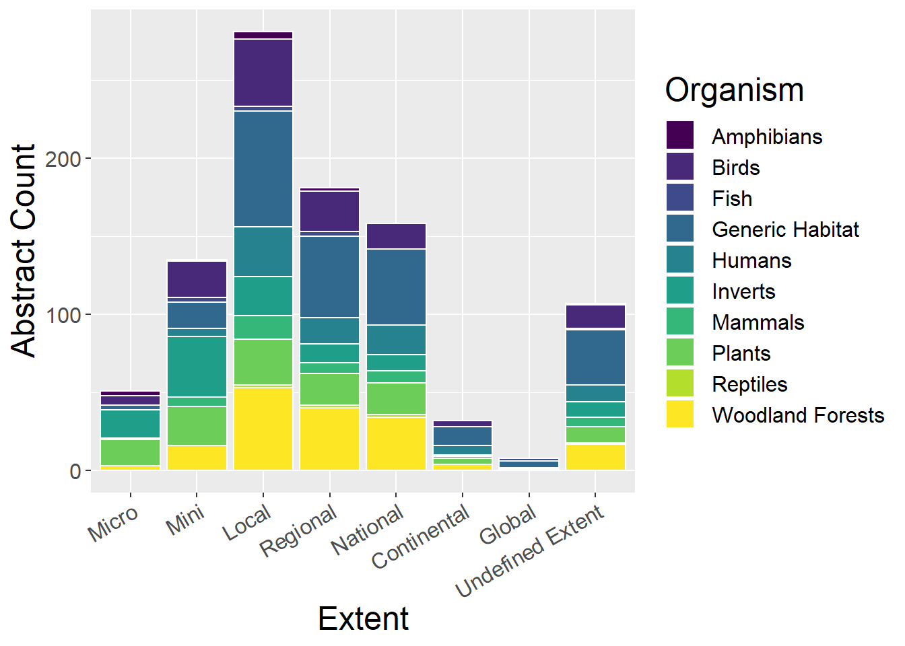
ggplot(speciesCounts, aes(x=Spatial, y=prop, fill=Type)) + geom_bar(stat="identity", colour="white") +
scale_fill_viridis(discrete = TRUE) +
theme(axis.text.x = element_text(angle = 30, hjust = 1)) +
labs(fill="Organism", y = "Proportion", x="Extent")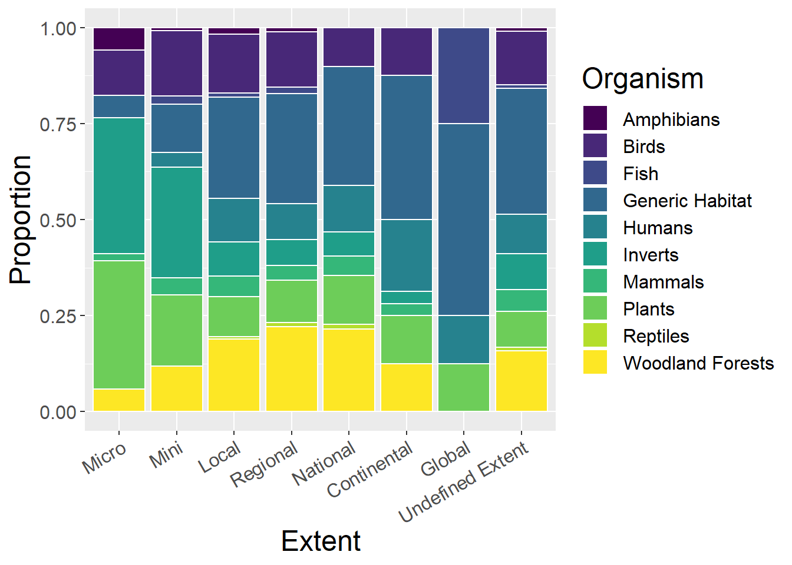
7.5 Methods
General observations:
- Global, Continental and Undefined Extent have the greatest proportions of Theoretical, Qualitative and Remote Sensing studies
- Smallest extents (mini and micro) have the largest proportions of Empirical studies (and local have largest absolute number)
- Regional and Local studies have largest number and proportions of GIS studies (and GIS used least at extremes of extents, i.e. mini, micro and global)
methodsCounts <- spatdata %>%
select(Spatial, Empirical, Theoretical, Qualitative, Quantitative, GIS, `Remote sensing`) %>%
mutate(sum = rowSums(.[2:7])) %>%
gather(key = Type, value = count, -Spatial, -sum) %>%
mutate(prop = count / sum)
spatdata %>%
select(Spatial, Empirical, Theoretical, Qualitative, Quantitative, GIS, `Remote sensing`) %>%
mutate(Total = rowSums(.[2:7])) %>%
mutate_if(is.numeric, funs(prop = ./ Total)) %>%
mutate_at(vars(ends_with("prop")), round, 3) %>%
select(-Total_prop) %>%
kable() %>%
kable_styling() %>%
scroll_box(width = "100%")| Spatial | Empirical | Theoretical | Qualitative | Quantitative | GIS | Remote sensing | Total | Empirical_prop | Theoretical_prop | Qualitative_prop | Quantitative_prop | GIS_prop | Remote sensing_prop |
|---|---|---|---|---|---|---|---|---|---|---|---|---|---|
| Micro | 27 | 4 | 0 | 17 | 4 | 1 | 53 | 0.509 | 0.075 | 0.000 | 0.321 | 0.075 | 0.019 |
| Mini | 71 | 9 | 9 | 51 | 13 | 4 | 157 | 0.452 | 0.057 | 0.057 | 0.325 | 0.083 | 0.025 |
| Local | 115 | 28 | 48 | 101 | 73 | 14 | 379 | 0.303 | 0.074 | 0.127 | 0.266 | 0.193 | 0.037 |
| Regional | 82 | 33 | 26 | 90 | 65 | 12 | 308 | 0.266 | 0.107 | 0.084 | 0.292 | 0.211 | 0.039 |
| National | 56 | 44 | 40 | 68 | 35 | 3 | 246 | 0.228 | 0.179 | 0.163 | 0.276 | 0.142 | 0.012 |
| Continental | 6 | 11 | 12 | 10 | 9 | 3 | 51 | 0.118 | 0.216 | 0.235 | 0.196 | 0.176 | 0.059 |
| Global | 2 | 5 | 3 | 3 | 1 | 1 | 15 | 0.133 | 0.333 | 0.200 | 0.200 | 0.067 | 0.067 |
| Undefined Extent | 35 | 56 | 23 | 34 | 11 | 5 | 164 | 0.213 | 0.341 | 0.140 | 0.207 | 0.067 | 0.030 |
ggplot(methodsCounts, aes(x=Spatial, y=count, fill=Type)) + geom_bar(stat="identity", colour="white") +
scale_fill_viridis(discrete = TRUE) +
theme(axis.text.x = element_text(angle = 30, hjust = 1)) +
labs(fill="Method", y = "Abstract Count", x="Extent")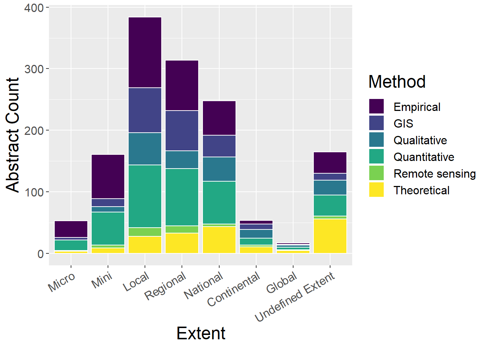
ggplot(methodsCounts, aes(x=Spatial, y=prop, fill=Type)) + geom_bar(stat="identity", colour="white") +
scale_fill_viridis(discrete = TRUE) +
theme(axis.text.x = element_text(angle = 30, hjust = 1)) +
labs(fill="Method", y = "Proportion", x="Extent")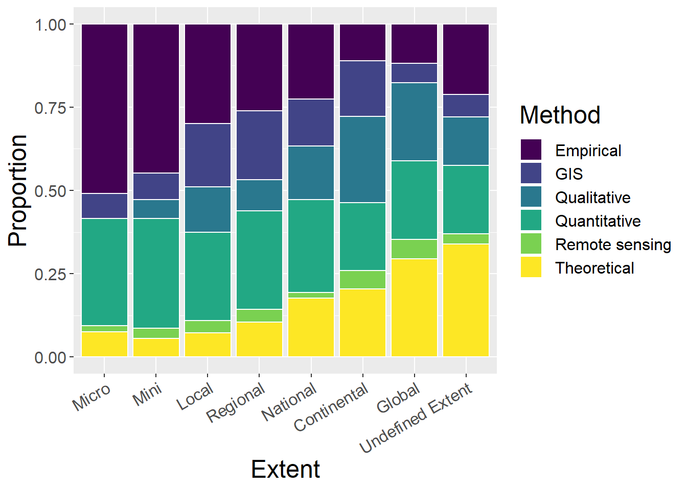
7.6 Temporal Extent
7.6.1 With undefined
General observations:
| Spatial | Hours | Days | Weeks | Months | Years | Decades | Centuries | Longer | Undefined Temporal | Total | Hours_prop | Days_prop | Weeks_prop | Months_prop | Years_prop | Decades_prop | Centuries_prop | Longer_prop | Undefined Temporal_prop |
|---|---|---|---|---|---|---|---|---|---|---|---|---|---|---|---|---|---|---|---|
| Micro | 0 | 0 | 2 | 6 | 8 | 2 | 0 | 0 | 18 | 36 | 0 | 0.000 | 0.056 | 0.167 | 0.222 | 0.056 | 0.000 | 0.000 | 0.500 |
| Mini | 0 | 0 | 2 | 6 | 18 | 14 | 3 | 0 | 60 | 103 | 0 | 0.000 | 0.019 | 0.058 | 0.175 | 0.136 | 0.029 | 0.000 | 0.583 |
| Local | 0 | 1 | 1 | 14 | 31 | 38 | 11 | 2 | 122 | 220 | 0 | 0.005 | 0.005 | 0.064 | 0.141 | 0.173 | 0.050 | 0.009 | 0.555 |
| Regional | 0 | 0 | 1 | 3 | 13 | 33 | 5 | 3 | 99 | 157 | 0 | 0.000 | 0.006 | 0.019 | 0.083 | 0.210 | 0.032 | 0.019 | 0.631 |
| National | 0 | 0 | 0 | 0 | 14 | 37 | 3 | 2 | 77 | 133 | 0 | 0.000 | 0.000 | 0.000 | 0.105 | 0.278 | 0.023 | 0.015 | 0.579 |
| Continental | 0 | 0 | 0 | 0 | 2 | 3 | 2 | 0 | 19 | 26 | 0 | 0.000 | 0.000 | 0.000 | 0.077 | 0.115 | 0.077 | 0.000 | 0.731 |
| Global | 0 | 0 | 0 | 0 | 1 | 3 | 0 | 0 | 4 | 8 | 0 | 0.000 | 0.000 | 0.000 | 0.125 | 0.375 | 0.000 | 0.000 | 0.500 |
| Undefined Extent | 0 | 0 | 0 | 2 | 2 | 5 | 2 | 2 | 99 | 112 | 0 | 0.000 | 0.000 | 0.018 | 0.018 | 0.045 | 0.018 | 0.018 | 0.884 |
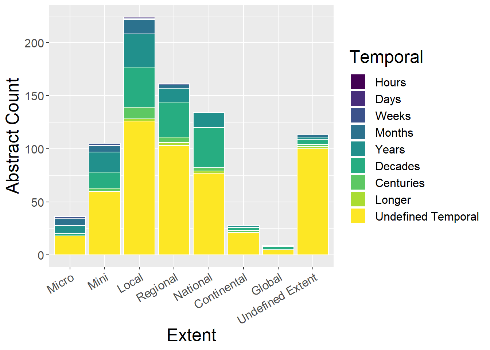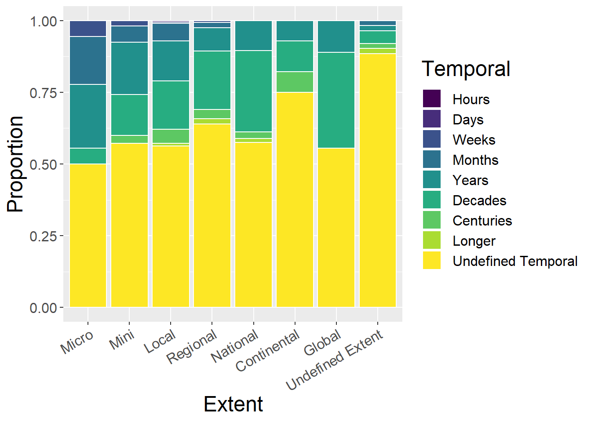
7.6.2 Without Undefined
- Again Global is qualitatively different (only Decades and Years studies)
- Continental has nothing shorter than Years
- National and Regional extents have large proportions of Decadal studies
- Micro and Mini extents have largest proprtions of Monthly and Weekly studies
| Spatial | Hours | Days | Weeks | Months | Years | Decades | Centuries | Longer | Total | Hours_prop | Days_prop | Weeks_prop | Months_prop | Years_prop | Decades_prop | Centuries_prop | Longer_prop |
|---|---|---|---|---|---|---|---|---|---|---|---|---|---|---|---|---|---|
| Micro | 0 | 0 | 2 | 6 | 8 | 2 | 0 | 0 | 18 | 0 | 0.00 | 0.111 | 0.333 | 0.444 | 0.111 | 0.000 | 0.000 |
| Mini | 0 | 0 | 2 | 6 | 18 | 14 | 3 | 0 | 43 | 0 | 0.00 | 0.047 | 0.140 | 0.419 | 0.326 | 0.070 | 0.000 |
| Local | 0 | 1 | 1 | 14 | 31 | 38 | 11 | 2 | 98 | 0 | 0.01 | 0.010 | 0.143 | 0.316 | 0.388 | 0.112 | 0.020 |
| Regional | 0 | 0 | 1 | 3 | 13 | 33 | 5 | 3 | 58 | 0 | 0.00 | 0.017 | 0.052 | 0.224 | 0.569 | 0.086 | 0.052 |
| National | 0 | 0 | 0 | 0 | 14 | 37 | 3 | 2 | 56 | 0 | 0.00 | 0.000 | 0.000 | 0.250 | 0.661 | 0.054 | 0.036 |
| Continental | 0 | 0 | 0 | 0 | 2 | 3 | 2 | 0 | 7 | 0 | 0.00 | 0.000 | 0.000 | 0.286 | 0.429 | 0.286 | 0.000 |
| Global | 0 | 0 | 0 | 0 | 1 | 3 | 0 | 0 | 4 | 0 | 0.00 | 0.000 | 0.000 | 0.250 | 0.750 | 0.000 | 0.000 |
| Undefined Extent | 0 | 0 | 0 | 2 | 2 | 5 | 2 | 2 | 13 | 0 | 0.00 | 0.000 | 0.154 | 0.154 | 0.385 | 0.154 | 0.154 |
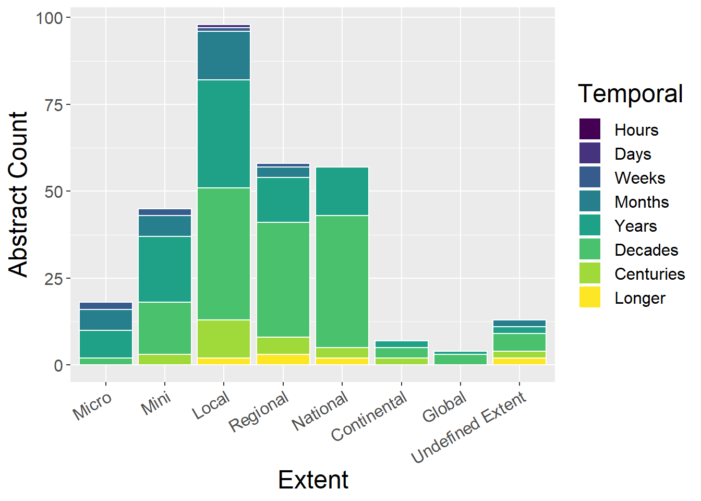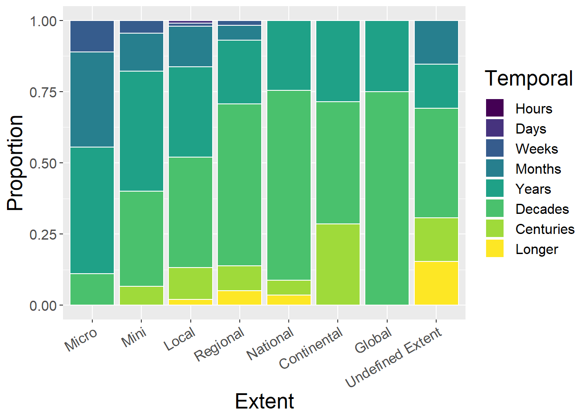
7.7 Concepts
General observations:
- Global extents have largest proportions of Ecosystem Services and Climate Change studies
- Continental and National extents have largest proportions of LUCC studies
- Micro extent have largest proportion of Pattern-Process-Scale studies
conceptCounts <- spatdata %>%
select(Spatial, `PPS of landscapes`,
`Connectivity and fragmentation`, `Scale and scaling`,`Spatial analysis and modeling`,LUCC,`History and legacy`,`Climate change interactions`,`Ecosystem services`,`Landscape sustainability`,`Accuracy and uncertainty`
) %>%
mutate(sum = rowSums(.[2:11])) %>%
gather(key = Type, value = count, -Spatial, -sum) %>%
mutate(prop = count / sum)
spatdata %>%
select(Spatial, `PPS of landscapes`,
`Connectivity and fragmentation`, `Scale and scaling`,`Spatial analysis and modeling`,LUCC,`History and legacy`,`Climate change interactions`,`Ecosystem services`,`Landscape sustainability`,`Accuracy and uncertainty`
) %>%
mutate(Total = rowSums(.[2:11])) %>%
mutate_if(is.numeric, funs(prop = ./ Total)) %>%
mutate_at(vars(ends_with("prop")), round, 3) %>%
select(-Total_prop) %>%
kable() %>%
kable_styling() %>%
scroll_box(width = "100%")| Spatial | PPS of landscapes | Connectivity and fragmentation | Scale and scaling | Spatial analysis and modeling | LUCC | History and legacy | Climate change interactions | Ecosystem services | Landscape sustainability | Accuracy and uncertainty | Total | PPS of landscapes_prop | Connectivity and fragmentation_prop | Scale and scaling_prop | Spatial analysis and modeling_prop | LUCC_prop | History and legacy_prop | Climate change interactions_prop | Ecosystem services_prop | Landscape sustainability_prop | Accuracy and uncertainty_prop |
|---|---|---|---|---|---|---|---|---|---|---|---|---|---|---|---|---|---|---|---|---|---|
| Micro | 11 | 7 | 6 | 7 | 7 | 0 | 0 | 1 | 0 | 0 | 39 | 0.282 | 0.179 | 0.154 | 0.179 | 0.179 | 0.000 | 0.000 | 0.026 | 0.000 | 0.000 |
| Mini | 20 | 25 | 12 | 16 | 18 | 7 | 4 | 6 | 6 | 1 | 115 | 0.174 | 0.217 | 0.104 | 0.139 | 0.157 | 0.061 | 0.035 | 0.052 | 0.052 | 0.009 |
| Local | 33 | 71 | 18 | 67 | 69 | 21 | 15 | 33 | 25 | 2 | 354 | 0.093 | 0.201 | 0.051 | 0.189 | 0.195 | 0.059 | 0.042 | 0.093 | 0.071 | 0.006 |
| Regional | 19 | 48 | 10 | 58 | 59 | 26 | 15 | 22 | 26 | 1 | 284 | 0.067 | 0.169 | 0.035 | 0.204 | 0.208 | 0.092 | 0.053 | 0.077 | 0.092 | 0.004 |
| National | 12 | 25 | 8 | 31 | 58 | 22 | 8 | 25 | 21 | 2 | 212 | 0.057 | 0.118 | 0.038 | 0.146 | 0.274 | 0.104 | 0.038 | 0.118 | 0.099 | 0.009 |
| Continental | 1 | 4 | 2 | 7 | 11 | 3 | 1 | 5 | 5 | 0 | 39 | 0.026 | 0.103 | 0.051 | 0.179 | 0.282 | 0.077 | 0.026 | 0.128 | 0.128 | 0.000 |
| Global | 2 | 2 | 1 | 1 | 3 | 2 | 2 | 6 | 1 | 0 | 20 | 0.100 | 0.100 | 0.050 | 0.050 | 0.150 | 0.100 | 0.100 | 0.300 | 0.050 | 0.000 |
| Undefined Extent | 16 | 30 | 9 | 21 | 14 | 4 | 5 | 22 | 12 | 1 | 134 | 0.119 | 0.224 | 0.067 | 0.157 | 0.104 | 0.030 | 0.037 | 0.164 | 0.090 | 0.007 |
ggplot(conceptCounts, aes(x=Spatial, y=count, fill=Type)) + geom_bar(stat="identity", colour="white") +
scale_fill_viridis(discrete = TRUE) +
theme(axis.text.x = element_text(angle = 30, hjust = 1)) +
labs(fill="Concept", y = "Abstract Count", x="Extent")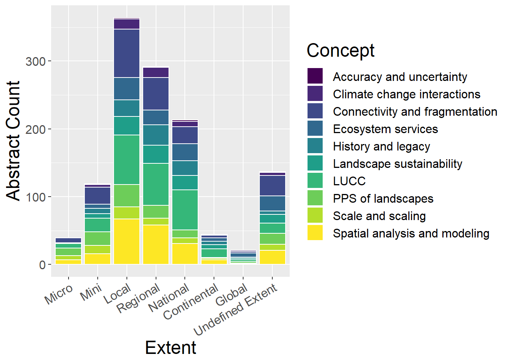
ggplot(conceptCounts, aes(x=Spatial, y=prop, fill=Type)) + geom_bar(stat="identity", colour="white") +
scale_fill_viridis(discrete = TRUE) +
theme(axis.text.x = element_text(angle = 30, hjust = 1)) +
labs(fill="Concept", y = "Proportion", x="Extent")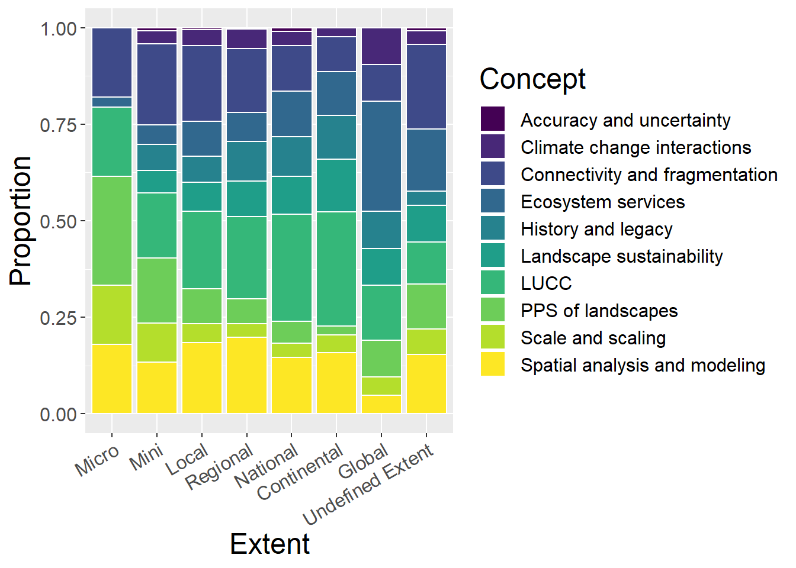
7.8 Other Concepts
General observations:
- Smallest extents (micro and mini) have smallest proportions of Socio-Economic Dimensions studies and largest proportions of Biodiversity studies
- Consistent proportions of Management and Conservation studies across all extents
otherCounts <- spatdata %>%
select(Spatial, `Green Infrastructure`,`Planning and Architecture`,`Management and Conservation`,`Cultural Landscapes`,`Socio-economic Dimensions`,Biodiversity,`Landscape Assessment`,`Catchment Based Approach`,`Invasives Pests Diseases`
) %>%
mutate(sum = rowSums(.[2:10])) %>%
gather(key = Type, value = count, -Spatial, -sum) %>%
mutate(prop = count / sum)
spatdata %>%
select(Spatial, `Green Infrastructure`,`Planning and Architecture`,`Management and Conservation`,`Cultural Landscapes`,`Socio-economic Dimensions`,Biodiversity,`Landscape Assessment`,`Catchment Based Approach`,`Invasives Pests Diseases`
) %>%
mutate(Total = rowSums(.[2:10])) %>%
mutate_if(is.numeric, funs(prop = ./ Total)) %>%
mutate_at(vars(ends_with("prop")), round, 3) %>%
select(-Total_prop) %>%
kable() %>%
kable_styling() %>%
scroll_box(width = "100%")| Spatial | Green Infrastructure | Planning and Architecture | Management and Conservation | Cultural Landscapes | Socio-economic Dimensions | Biodiversity | Landscape Assessment | Catchment Based Approach | Invasives Pests Diseases | Total | Green Infrastructure_prop | Planning and Architecture_prop | Management and Conservation_prop | Cultural Landscapes_prop | Socio-economic Dimensions_prop | Biodiversity_prop | Landscape Assessment_prop | Catchment Based Approach_prop | Invasives Pests Diseases_prop |
|---|---|---|---|---|---|---|---|---|---|---|---|---|---|---|---|---|---|---|---|
| Micro | 3 | 2 | 12 | 0 | 1 | 17 | 2 | 1 | 3 | 41 | 0.073 | 0.049 | 0.293 | 0.000 | 0.024 | 0.415 | 0.049 | 0.024 | 0.073 |
| Mini | 10 | 8 | 39 | 5 | 6 | 49 | 3 | 3 | 5 | 128 | 0.078 | 0.062 | 0.305 | 0.039 | 0.047 | 0.383 | 0.023 | 0.023 | 0.039 |
| Local | 22 | 43 | 108 | 30 | 45 | 80 | 13 | 16 | 1 | 358 | 0.061 | 0.120 | 0.302 | 0.084 | 0.126 | 0.223 | 0.036 | 0.045 | 0.003 |
| Regional | 13 | 28 | 86 | 33 | 35 | 68 | 17 | 8 | 2 | 290 | 0.045 | 0.097 | 0.297 | 0.114 | 0.121 | 0.234 | 0.059 | 0.028 | 0.007 |
| National | 6 | 28 | 74 | 18 | 24 | 54 | 21 | 3 | 1 | 229 | 0.026 | 0.122 | 0.323 | 0.079 | 0.105 | 0.236 | 0.092 | 0.013 | 0.004 |
| Continental | 1 | 2 | 15 | 7 | 6 | 7 | 5 | 0 | 2 | 45 | 0.022 | 0.044 | 0.333 | 0.156 | 0.133 | 0.156 | 0.111 | 0.000 | 0.044 |
| Global | 1 | 3 | 7 | 1 | 2 | 6 | 1 | 0 | 0 | 21 | 0.048 | 0.143 | 0.333 | 0.048 | 0.095 | 0.286 | 0.048 | 0.000 | 0.000 |
| Undefined Extent | 6 | 22 | 50 | 13 | 24 | 43 | 11 | 4 | 0 | 173 | 0.035 | 0.127 | 0.289 | 0.075 | 0.139 | 0.249 | 0.064 | 0.023 | 0.000 |
ggplot(otherCounts, aes(x=Spatial, y=count, fill=Type)) + geom_bar(stat="identity", colour="white")+
scale_fill_viridis(discrete = TRUE) +
theme(axis.text.x = element_text(angle = 30, hjust = 1)) +
labs(fill="Concept", y = "Abstract Count", x="Extent")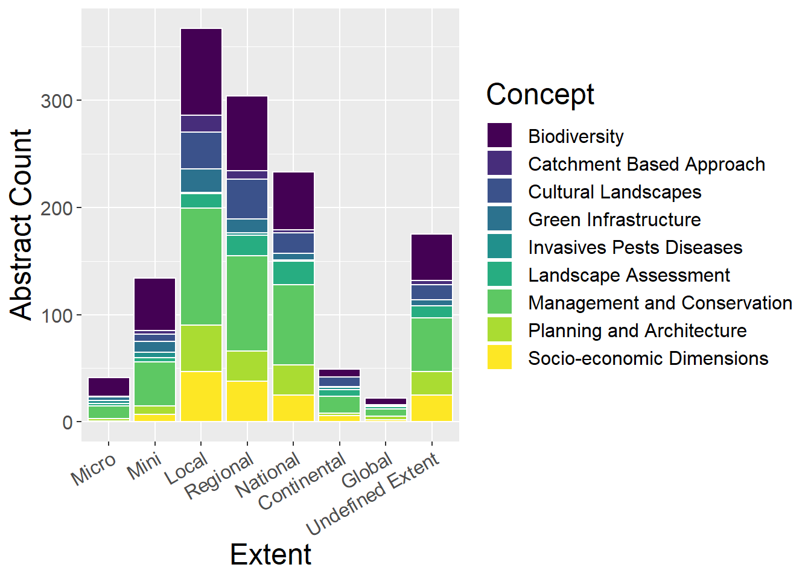
ggplot(otherCounts, aes(x=Spatial, y=prop, fill=Type)) + geom_bar(stat="identity", colour="white")+
scale_fill_viridis(discrete = TRUE) +
theme(axis.text.x = element_text(angle = 30, hjust = 1)) +
labs(fill="Concept", y = "Proportion", x="Extent")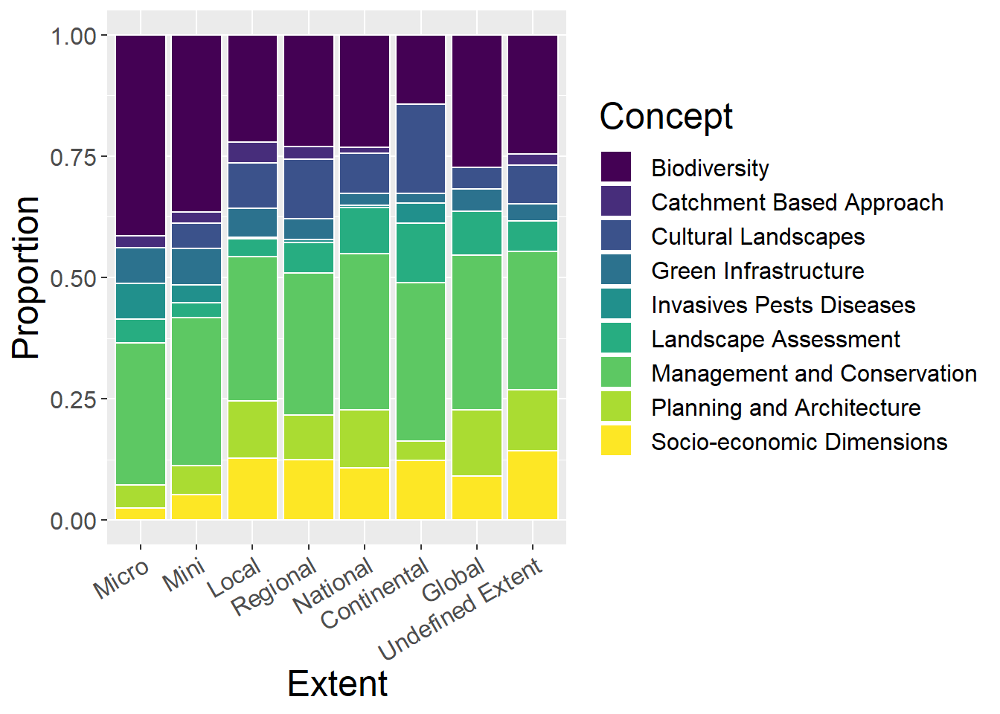